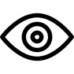
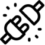
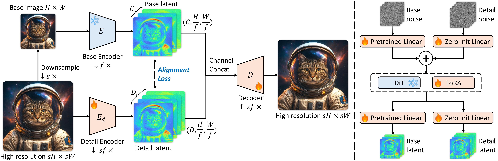
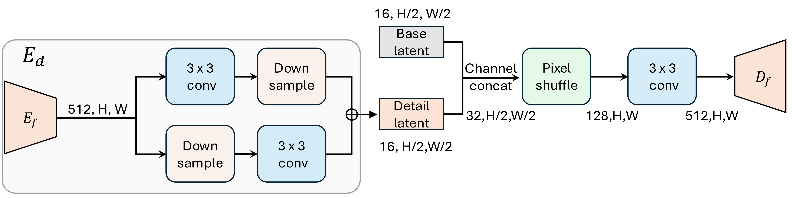
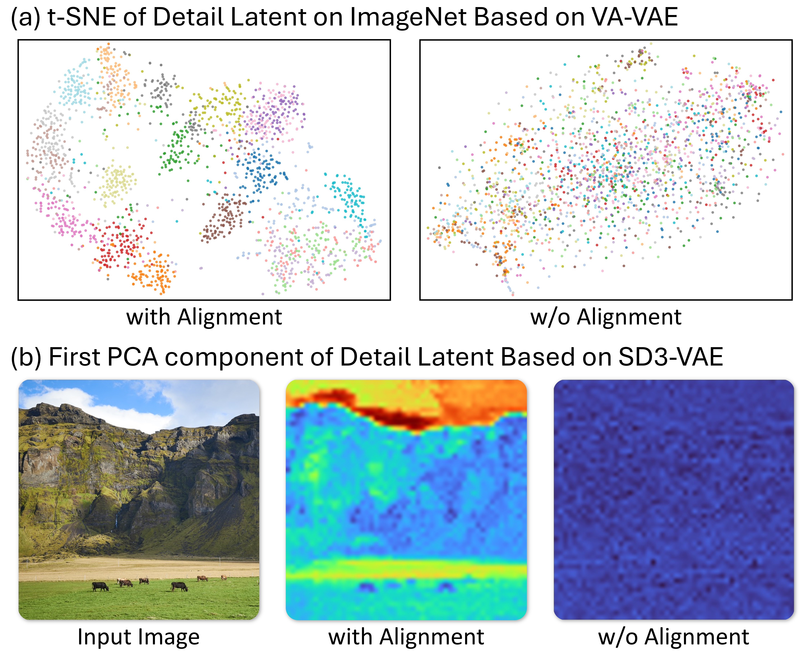
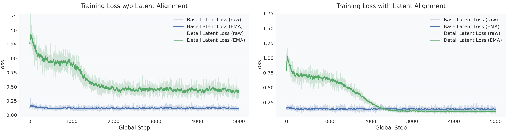
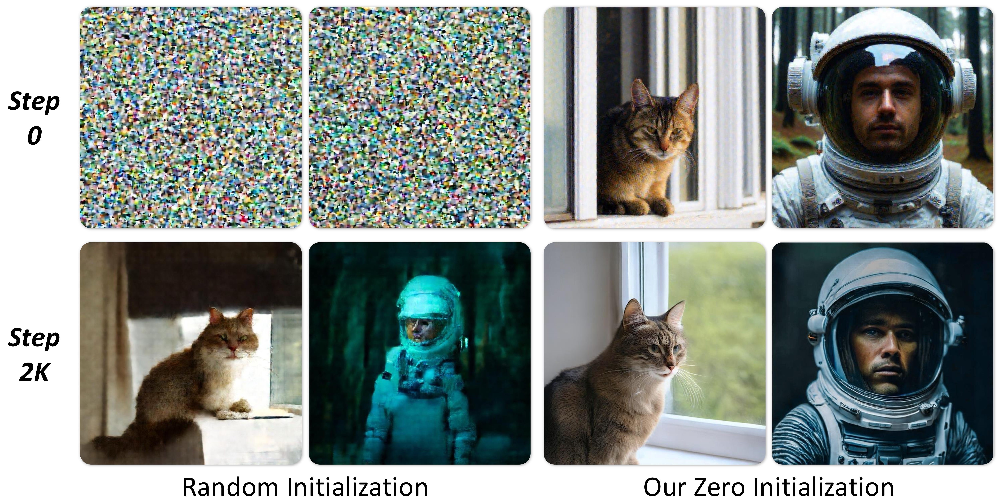

Plug-in Latent Compression for Diffusion via Detail Alignment
DA-VAE is a plug-in latent compression method that upgrades a pretrained VAE into a base+detail
latent without retraining the diffusion backbone from scratch. The key idea is to preserve the
original latent structure while adding detail channels that are explicitly aligned to it.

Structured base+detail latent. Keep pretrained channels intact while adding a detail branch for high-resolution content. See Structured Latent

Alignment + warm-start. Detail channels are aligned to the base latent and trained with zero-init + loss scheduling for stable fine-tuning. See Warm-Start
High-res with fewer tokens. 1K generation at 32x32 tokens on SD3.5-M with preserved quality. See SD3.5 Results
1Multimedia Laboratory, CUHK2Adobe NextCam3Shanghai AI Laboratory4CPII under InnoHK
†Project lead
We introduce DA-VAE, a plug-in latent compression method that upgrades a pretrained VAE into a structured
base+detail latent. By aligning the new detail channels to the original latent structure, DA-VAE preserves
pretrained diffusion behavior while enabling higher-resolution generation with fewer tokens. We validate
this on ImageNet and SD3.5-M fine-tuning.
DA-VAE is organized around five key pillars that motivate the rest of this page:
Modern diffusion transformers (DiTs) are increasingly bottlenecked by attention cost, which scales
quadratically with the number of visual tokens. A straightforward way to support higher resolutions is to
increase the token grid (e.g., 64x64 for 1K), but this quickly becomes expensive. Existing high-compression
tokenizers can reduce token count, yet often introduce a new latent space that is difficult for diffusion
to model, forcing costly retraining from scratch.
DA-VAE aims for a more practical upgrade path: start from an existing pretrained diffusion model and
increase tokenizer efficiency while keeping the original latent structure as a reference.
Goal: represent higher-resolution images with the same token grid (or fewer tokens) while keeping diffusion training stable.
Constraint: avoid full retraining of the diffusion backbone; preserve the pretrained prior at initialization.
Key idea: expand the latent in a structured way (base + detail) and align the new channels to the pretrained latent structure.
Method
DA-VAE consists of (i) a structured latent space that reuses the pretrained latent as the first channels,
(ii) a simple alignment loss that regularizes the new detail channels, and (iii) a warm-start recipe that
adapts a pretrained DiT with minimal disruption.
The following overview figure (Fig. Method) summarizes the full method; the rest of this section unpacks
it into three components.

Overview of the base-detail latent and zero-init warm start (Fig. Method).
1) Structured base + detail latent
Let a pretrained VAE encoder produce a base latent z for a base-resolution image, with
C channels. DA-VAE encodes the corresponding high-resolution image with the same spatial
token grid, but with C + D channels by concatenating (a) the unchanged pretrained latent
channels and (b) an additional D-channel detail latent z_d. A single
decoder reconstructs the high-resolution image from [z, z_d].
In terms of tokenizer efficiency, this design supports increasing spatial compression (downsampling) while
compensating capacity in the channel dimension. In experiments, the paper sets the high-resolution scale
factor to s = 2 (e.g., 512 to 1024), keeping the token grid fixed while expanding channels.

DA-VAE instantiated on SD3-VAE with lightweight downsampling and upsampling blocks.
2) Detail alignment (make z_d diffusion-friendly)
Without additional structure, extra channels tend to absorb noisy residuals and are hard for diffusion to
model. DA-VAE introduces a latent alignment loss that encourages z_d to mirror the
structure of the pretrained latent z, using a parameter-free grouped channel reduction
to compare the two (see Alignment analysis in Ablations).
Concretely, the paper projects z_d back to C channels via grouped
averaging (with group ratio r = D / C) and minimizes an L2 distance to the base latent.
Training-wise, the paper keeps the original encoder for z fixed and optimizes the detail
encoder and decoder with standard reconstruction losses plus the alignment loss. This is a deliberate
choice: the base channels remain a stable reference for both reconstruction and diffusion fine-tuning.
3) Warm-start diffusion fine-tuning
To adapt a pretrained DiT to the expanded latent, DA-VAE adds an extra patch embedder and output head for
the new detail channels. These added modules are zero-initialized, so the model is
functionally identical to the pretrained DiT at the start of fine-tuning. A gradual loss
scheduling further down-weights the detail-branch loss early on, then ramps it up to encourage the
model to learn the new channels stably.
For large backbones such as SD3.5, the paper applies LoRA to attention and FFN layers while still training
the (added) patch embedder and output heads, matching the warm-start objective: preserve what is already
learned, and focus adaptation capacity on the interface to the new latent channels.
Results
This section summarizes the main empirical takeaways and points to the exact tables/figures used as
evidence. For qualitative evidence, jump to Qualitative Results.
Text-to-image: SD3.5-M at 1024x1024 with fewer tokens
Takeaway: DA-VAE enables 1K generation with a 32x32 token grid while keeping SD3.5-M quality competitive.
Evidence: On MJHQ-30K at 1024x1024, DA-VAE achieves FID 10.91 / CLIP 31.91 / GenEval 0.64 at 1.03 img/s using 32x32 tokens, while SD3.5-medium uses 64x64 tokens at 0.25 img/s (see SD3.5 Results).
Additional evidence: Under the same 32x32 token grid and throughput, DA-VAE improves over the SD3.5 upsample baseline (FID 10.91 vs 12.04, CLIP 31.91 vs 30.17; SD3.5 Results).
Interpretation: By allocating capacity into aligned detail channels (instead of more spatial tokens), DA-VAE improves throughput (about 4x vs SD3.5-medium in this table) without requiring a new diffusion model from scratch.
What "32x32 tokens" means: the diffusion model operates on a 32-by-32 latent grid rather than 64-by-64 at 1K, reducing attention cost substantially.
Where quality is measured: FID/CLIP/GenEval are reported under the paper's MJHQ-30K protocol at 1024x1024.
Notes: Throughput is measured on a single A100 (BF16, batch size 10) under the paper's protocol. Several
baseline rows are copied under the same evaluation protocol as stated in the paper table caption.
Class-conditional generation: ImageNet 512x512
Takeaway: DA-VAE adapts a pretrained generator to a more compressed latent setting and achieves strong ImageNet performance under fine-tuning.
Evidence: With DA-VAE (f32c128p1) at 16x16 tokens, fine-tuning reaches FID-50k 4.84 and IS 314.3 with CFG at 80 epochs (see ImageNet 512x512).
Additional evidence: The table also shows that DA-VAE reaches strong performance even at 25 epochs (FID-50k 6.04, IS 277.6), highlighting the efficiency of the warm-start recipe under limited budgets (see ImageNet 512x512).
Interpretation: The structured latent and warm-start recipe enable a favorable fine-tuning regime compared to training from scratch for new tokenizers.
ImageNet 512x512: Efficiency and Performance
Method
Training Regime
Autoencoder
rFID
Tokens
Epochs
FID-50k (w/o CFG)
FID-50k (w/ CFG)
Inception Score
DiT-XL
Scratch
SD-VAE (f8c4p2)
0.48
32x32
2400
12.04
3.04
255.3
REPA
Scratch
SD-VAE (f8c4p2)
0.48
32x32
200
NA
2.08
274.6
DiT-XL
Scratch
DC-AE (f32c32p1)
0.66
16x16
2400
9.56
2.84
117.5
DC-Gen-DiT-XL
Fine-tune
DC-AE (f32c32p1)
0.66
16x16
80
8.21
2.22
122.5
LightningDiT-XL*
Scratch
VA-VAE (f16c32p2)
0.50
16x16
80
21.79
3.98
229.7
LightningDiT-XL
Fine-tune
VA-VAE (f16c32p2)
0.50
16x16
80
11.31
3.12
254.5
Ours (DA-VAE)
Fine-tune
DA-VAE (f32c128p1)
0.47
16x16
25
6.04
2.07
277.6
Ours (DA-VAE)
Fine-tune
DA-VAE (f32c128p1)
0.47
16x16
80
4.84
1.68
314.3
Notes: Some reference numbers are copied directly from prior work as indicated in the paper (see table
caption in the LaTeX source).
Autoencoder trade-off: reconstruction vs generation
Takeaway: DA-VAE improves generation quality while keeping reconstruction metrics competitive.
Evidence: Among compared autoencoders, DA-VAE reports the best FID-10k (31.51) while maintaining rFID 0.47 / PSNR 28.53 / LPIPS 0.12 / SSIM 0.78 on ImageNet val reconstructions (see Autoencoder Trade-off).
Interpretation: This supports the paper's claim that a structured latent with alignment can be more diffusion-friendly than naively increasing channel width.
Autoencoder Trade-off (ImageNet val reconstruction + generation)
Autoencoder
rFID (down)
PSNR (up)
LPIPS (down)
SSIM (up)
FID-10k (down)
SD-VAE (f8c4p4)
0.48
29.22
0.13
0.79
58.17
DC-AE (f32c32p1)
0.66
27.78
0.16
0.74
35.97
VA-VAE (f16c32p2)
0.50
28.43
0.13
0.78
44.65
DA-VAE (f32c128p1)
0.47
28.53
0.12
0.78
31.51
Qualitative Results
These figures complement the tables above by showing where detail channels help: richer local textures,
fewer structural failures, and better prompt-faithful composition. For the SD3.5 comparisons, the paper's
baseline is produced by generating at 512x512 then upsampling to 1K.
This section explains why the method components matter, using targeted ablations and diagnostics.
Each claim below is tied to the corresponding table/figure.
Alignment is necessary for a structured detail latent
Takeaway: Without alignment, the detail channels become unstructured and generation quality drops.
Evidence: In component ablations, removing alignment increases FID-10k from 9.27 to 16.37 (see Component Ablations), and the alignment visualization shows more organized features under alignment (see Fig. Alignment).
Interpretation: Alignment turns the added width into usable structure rather than noisy residual capacity.

Alignment structures detail latents for VA-VAE and SD3-VAE (Fig. Alignment).
Alignment Weight Ablation
Alignment Weight
rFID
PSNR
LPIPS
SSIM
FID-10k
0.0
0.59
29.23
0.11
0.80
16.37
0.1
0.55
28.70
0.12
0.79
9.58
0.5
0.47
28.53
0.12
0.78
9.27
1.0
0.63
27.90
0.14
0.76
9.23
Reading guide: increasing alignment weight tends to improve generation FID-10k while slightly degrading
reconstruction metrics; the paper uses a moderate weight (0.5) as a trade-off in other experiments.

Training dynamics with and without alignment during SD3.5-M fine-tuning.
Reading guide: this figure plots the unweighted diffusion loss (per-token MSE) on the
base latent (blue) and the detail latent (green), showing raw curves (faint) and an EMA (solid). Without
latent alignment, the detail-latent loss decreases slowly and stays substantially higher than the
base-latent loss. With alignment, optimization becomes more stable and converges to a lower-loss solution;
the detail-latent loss eventually falls below the base-latent loss, indicating that the DiT learns a
well-structured distribution over the added detail channels.
Warm-start matters: zero-init and scheduling
Takeaway: Preserving pretrained behavior at initialization makes fine-tuning stable and efficient.
Evidence: Removing zero-init increases FID-10k to 29.73, and removing the scheduler degrades FID-10k from 9.27 to 9.80 (see Component Ablations). Zero-init also yields faster convergence in the zero-init comparison.
Interpretation: The extra heads start as no-ops, then the model gradually learns the new detail distribution.
Component Ablations (FID-10k)
Method
Alignment
Zero Init
Weight Scheduler
FID-10k
Ours (full)
yes
yes
yes
9.27
w/o alignment
no
yes
yes
16.37
w/o zero init
yes
no
yes
29.73
w/o weight scheduler
yes
yes
no
9.80

Zero-init stabilizes and accelerates diffusion fine-tuning (Fig. Initialization).
BibTeX
@inproceedings{cai2026davae,
title={{DA-VAE: Plug-in Latent Compression for Diffusion via Detail Alignment}},
author={Cai, Xin and You, Zhiyuan and Zhang, Zhoutong and Xue, Tianfan},
booktitle={CVPR},
year={2026},
note={CVPR 2026}
}